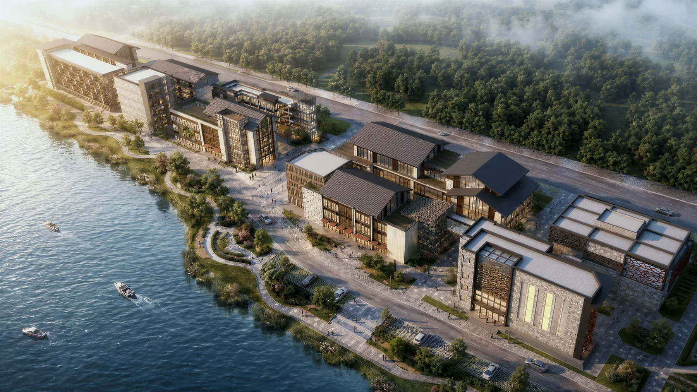

AI Architecture / Research Portfolio
宋志诚
面向 AI 设计工具、AIGC 空间可视化与 Human-AI Workflow，把建筑设计问题转化为可测试、可复现、可交流的产品与研究原型。

Profile
建筑学背景 + AI 产品化原型能力
我的研究和作品围绕建筑师与设计团队在早期方案、空间更新、建模自动化和客户沟通中的真实需求展开：如何把自然语言、图像、视频、规则参数和反馈日志转化为可编辑的模型与可解释的工作流。
网站内容来自论文源文件、成果 PPT 与协作项目素材。公开版本只保留成果展示和邮箱联系，不公开手机号、完整简历 PDF 或原始论文/演示文件。
6深度成果案例
86成果 PPT 页面梳理
AI x Architecture产品、研究与可视化交叉

EditPanorama
Indoor renovation interaction and presentation through diffusion models
Stable DiffusionComfyUIControlNetInpainting

Voice-Aided Rhino Modeling
Speech or text becomes Rhino script through ASR, RAG, LLM generation, and plugin execution
ASRRAGLLMRhino Plugin
Current Paper
Text to Massing: A human-AI workflow for 3D massing design
Architectural design brief into reproducible code for office massing generation
Early-stage office massing design traditionally relies on manual heuristics and iterative refinement, hindering the translation of design briefs into algorithmic procedures. The absence of structured reusable rules undermines the reproducibility and reliability of Large Language Models (LLMs) assisted design processes. This paper introduces a circulation-first methodology that converts architectural requirements into executable scripts using a five-element prompt template comprising Objectives, Constraints, Priorit...